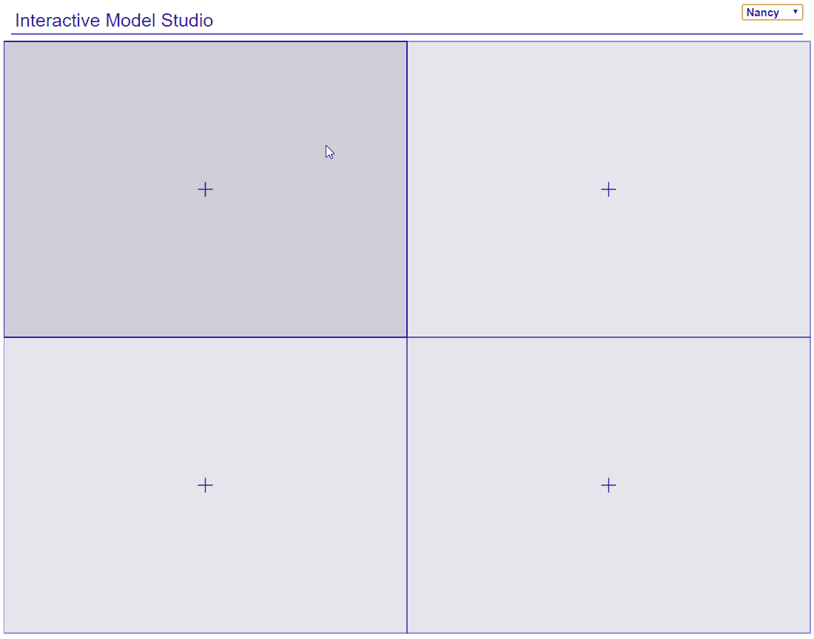

Automate Explaining Machine Learning Predictive Models
This package generates advanced interactive and animated model explanations in the form of serverless HTML site.
It combines R with D3.js to produce plots and descriptions for local and global explanations. The whole is greater than the sum of its parts, so it also supports EDA on top of that. ModelStudio is a fast and condensed way to get all the answers without much effort. Break down your model and look into its ingredients with only a few lines of code.
See an example It also works with Python scikit-learn, keras and more, thanks to DALEXtra

The package dime is a part of the DrWhy.AI universe.
Find more about model explanations in Predictive Models: Visual Exploration, Explanation and Debugging e-book.
Installation
Install from GitHub:
# dependencies
devtools::install_github("ModelOriented/ingredients")
devtools::install_github("ModelOriented/iBreakDown")
# dime
devtools::install_github("ModelOriented/dime")Make sure that all dependencies are up-to-date with GitHub.
Demo
This package bases on DALEX::explain().
Create a model:
titanic <- na.omit(titanic)
set.seed(1313)
titanic_small <- titanic[sample(1:nrow(titanic), 500), c(1,2,3,6,7,9)]
model_titanic_glm <- glm(survived == "yes" ~ gender + age + fare + class + sibsp,
data = titanic_small, family = "binomial")Wrap it into an explainer:
explain_titanic_glm <- explain(model_titanic_glm,
data = titanic_small[,-6],
y = titanic_small$survived == "yes",
label = "glm")Pick some data points:
new_observations <- titanic_small[1:4,-6]
rownames(new_observations) <- c("Lucas", "James", "Thomas", "Nancy")Make a studio for the model:

License
- GPL
Developers
- Hubert Baniecki
Author, maintainer - Przemyslaw Biecek
Author